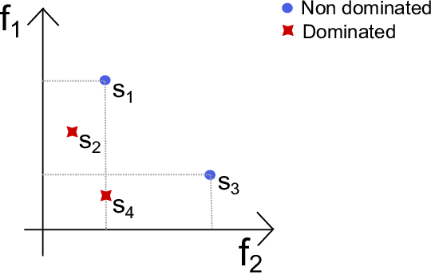
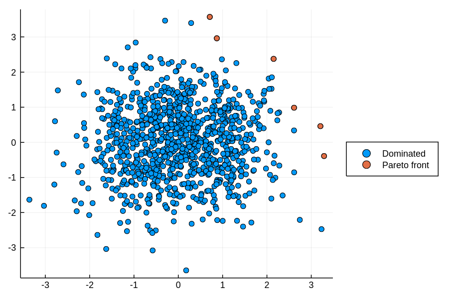
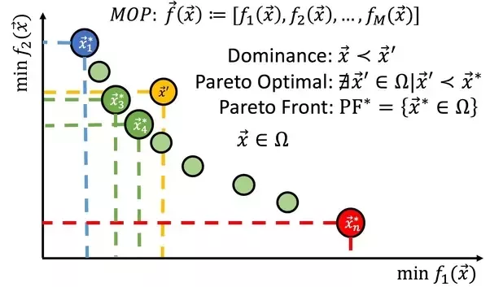
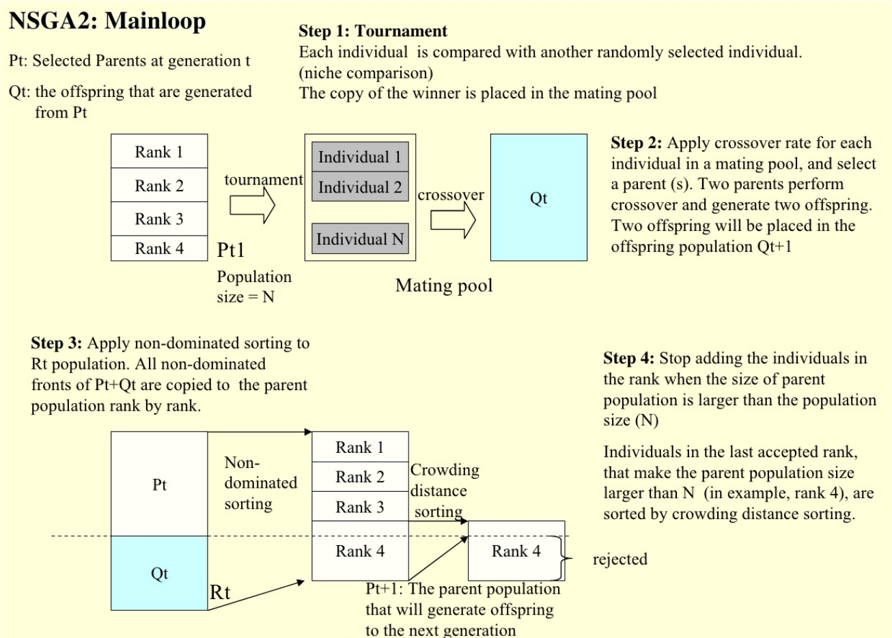
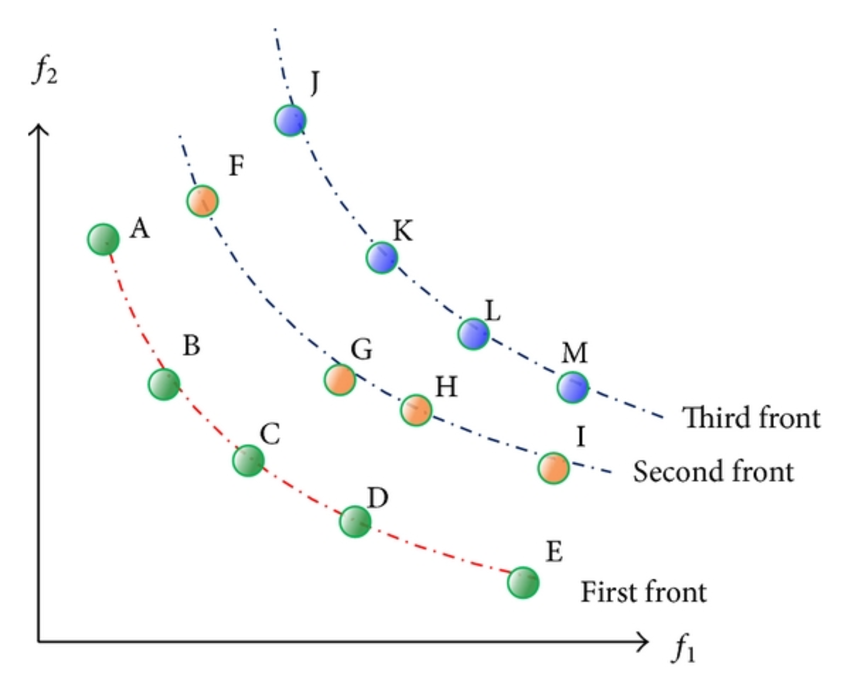
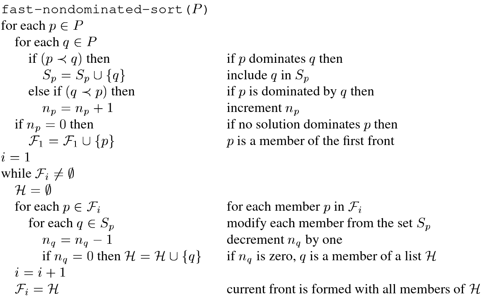
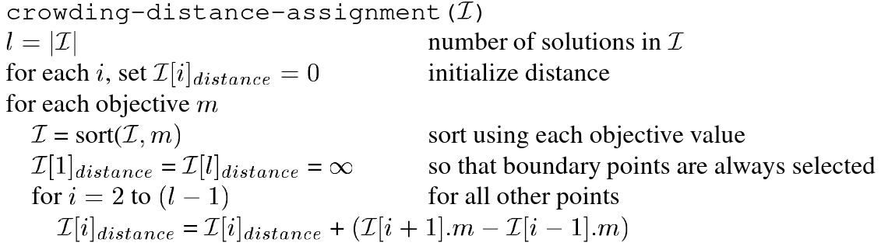
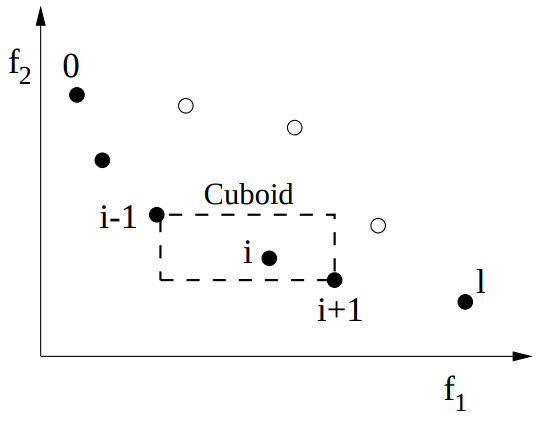
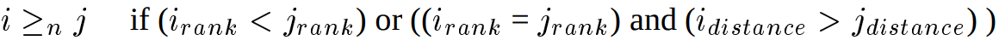
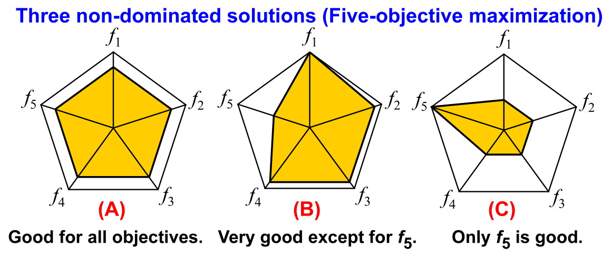

Evolutionary Computation
Multi-objective Optimization
Multi-objective Optimization
The study of optimizing more than one objective function simultaneously.

- Multi-objective evolutionary algorithms
- Pareto dominance
- NSGA-II
- Many-objective optimization
MOEAs
Multi-objective evolutionary algorithms
- NSGA: Srinivas, Nidamarthi, and Kalyanmoy Deb. "Muiltiobjective optimization using nondominated sorting in genetic algorithms." Evolutionary computation 2.3 (1994): 221-248.
- SPEA2: Zitzler, Eckart, Marco Laumanns, and Lothar Thiele. "SPEA2: Improving the strength Pareto evolutionary algorithm." TIK-report 103 (2001).
- NSGA-II: Deb, Kalyanmoy, et al. "A fast and elitist multiobjective genetic algorithm: NSGA-II." IEEE transactions on evolutionary computation 6.2 (2002): 182-197.
- Deb, Kalyanmoy (2001) Multi-objective optimization using evolutionary algorithms. John-Wiley, Chichester
- MOEA/D: Zhang, Qingfu, and Hui Li. "MOEA/D: A multiobjective evolutionary algorithm based on decomposition." IEEE Transactions on evolutionary computation 11.6 (2007): 712-731.
- Emmerich, Michael TM, and André H. Deutz. "A tutorial on multiobjective optimization: fundamentals and evolutionary methods." Natural computing 17.3 (2018): 585-609. [pdf]
Pareto dominance

Pareto front

Pareto front

NSGA-II Overview

Deb, Kalyanmoy, et al. "A fast and elitist multiobjective genetic algorithm: NSGA-II." IEEE transactions on evolutionary computation 6.2 (2002): 182-197.
[pdf]
Non-dominated sorting

Wang, H. S., C. H. Tu, and K. H. Chen. "Supplier selection and production planning by using guided genetic algorithm and dynamic nondominated sorting genetic algorithm II approaches." Mathematical Problems in Engineering 2015 (2015).
Fast non-dominated sort

Deb, Kalyanmoy, et al. "A fast and elitist multiobjective genetic algorithm: NSGA-II." IEEE transactions on evolutionary computation 6.2 (2002): 182-197.
[pdf]
Crowding Distance Assignment


Deb, Kalyanmoy, et al. "A fast and elitist multiobjective genetic algorithm: NSGA-II." IEEE transactions on evolutionary computation 6.2 (2002): 182-197.
[pdf]
NSGA-II Overview

Deb, Kalyanmoy, et al. "A fast and elitist multiobjective genetic algorithm: NSGA-II." IEEE transactions on evolutionary computation 6.2 (2002): 182-197.
[pdf]
Problems with Pareto

Ishibuchi, Hisao, and Hiroyuki Sato. "Evolutionary many-objective optimization."
Proceedings of the Genetic and Evolutionary Computation Conference Companion. 2019.
Many-objective optimization

Ishibuchi, Hisao, and Hiroyuki Sato. "Evolutionary many-objective optimization."
Proceedings of the Genetic and Evolutionary Computation Conference Companion. 2019.
Exercise 1
Explore some applications of MOEAs.
Choose an article and report on Discord what the problem is and what the different objectives are.
Here are some examples, but you can look online too:
Choose an article and report on Discord what the problem is and what the different objectives are.
Here are some examples, but you can look online too:
- Explaining quantum correlations through evolution of causal models
- Multi-objective Software Effort Estimation
- Multi-Objective Optimal Energy Consumption Scheduling in Smart Grids
- Applications of Multi-Objective Evolutionary Algorithms in Economics and Finance: A Survey
- Evolutionary Algorithms for Multi-Objective Optimization in HVAC System Control Strategy